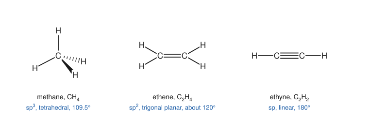
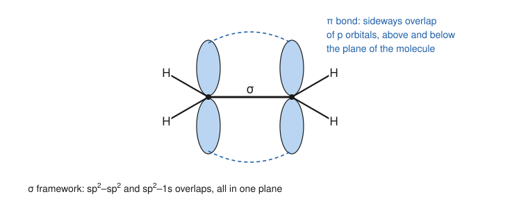
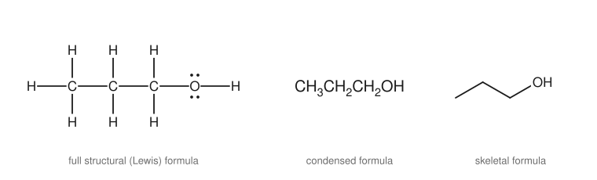
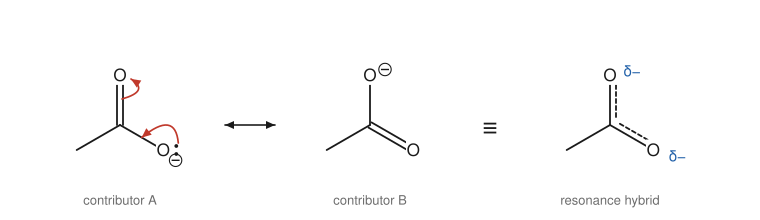

Chapter 1: Structure and Bonding¶
Electrons, shapes and the ways we draw molecules
Everything in organic chemistry follows from the way carbon shares its electrons. A carbon atom forms four bonds, it bonds strongly to other carbon atoms, and it does so in three distinct geometries. Those three facts allow an almost unlimited number of stable molecules. This chapter builds the picture of bonding that the rest of the book relies on: how to count electrons and draw correct structures, how electronegativity makes bonds polar, how hybridisation explains molecular shape, and how resonance describes molecules that a single drawing cannot capture.
Learning outcomes
By the end of this chapter you should be able to:
- draw correct Lewis structures for organic molecules and ions, and assign formal charges;
- predict bond polarity from electronegativity and recognise polar molecules;
- state the hybridisation (sp³, sp² or sp) of carbon, nitrogen and oxygen atoms and predict bond angles and shapes;
- distinguish σ and π bonds and explain why a double bond does not rotate;
- read and draw full, condensed and skeletal formulas;
- draw resonance contributors with curly arrows and judge which contributes most;
- relate boiling point and solubility to intermolecular forces.
1.1 What organic chemistry is about¶
Organic chemistry is the chemistry of compounds of carbon. The name is historical: early chemists believed that compounds from living things contained a "vital force" and could not be made from minerals. In 1828 Friedrich Wöhler made urea, a compound found in urine, by heating ammonium cyanate, a salt that could be prepared without any living source. Over the following decades the idea of a vital force faded, and the name "organic" stayed for the chemistry of carbon.
Why does one element deserve its own branch of chemistry? Carbon sits in the middle of the second row of the periodic table, with four valence electrons. It neither gives these electrons away easily (as sodium does) nor takes four more easily (as fluorine takes one). Instead it shares them, forming four covalent bonds. Carbon–carbon bonds are strong, so carbon atoms link into chains, branches and rings of any size. Carbon also bonds well to hydrogen, oxygen, nitrogen, sulfur and the halogens. The result is many millions of known compounds, more than for all the other elements combined.
Most organic molecules have a skeleton of carbon and hydrogen atoms that is fairly unreactive, decorated with small groups of other atoms that react in predictable ways. These groups are called functional groups (Chapter 2). Learning organic chemistry is largely learning how each functional group behaves, and why.
1.2 Atoms, electrons and the covalent bond¶
Electron configuration¶
A carbon atom has six electrons: two in the 1s orbital and four in the second shell, arranged as 2s² 2p². Only the second-shell electrons, the valence electrons, take part in bonding. The number of valence electrons is the group number in the main-group table: hydrogen has 1, carbon 4, nitrogen 5, oxygen 6 and the halogens 7.
Atoms of the second row (carbon, nitrogen, oxygen, fluorine) have room for eight electrons in their valence shell, one s orbital and three p orbitals with two electrons each. Bonded atoms tend to arrange themselves so that each has a full shell: eight electrons for second-row atoms (the octet rule) and two for hydrogen.
The covalent bond¶
A covalent bond is a pair of electrons shared between two nuclei. Both nuclei attract the shared pair, and that mutual attraction holds the atoms together. When one atom shares a pair with another, both count the pair towards their octet.
The number of bonds an atom normally forms follows from how many electrons it needs to complete its shell:
| Atom | Valence electrons | Usual number of bonds | Lone pairs (neutral) |
|---|---|---|---|
| H | 1 | 1 | 0 |
| C | 4 | 4 | 0 |
| N | 5 | 3 | 1 |
| O | 6 | 2 | 2 |
| F, Cl, Br, I | 7 | 1 | 3 |
Table 1.1. Valence and bonding of the common atoms of organic chemistry.
Memorise the last two columns. When you draw a structure, a neutral carbon has four bonds, a neutral nitrogen three bonds and a lone pair, a neutral oxygen two bonds and two lone pairs. Any atom that does not fit this pattern carries a formal charge (Section 1.3).
Key idea
Carbon forms four bonds. In every structure you draw, check that each carbon has exactly four bonds (counting a double bond as two and a triple bond as three) unless it is deliberately shown as a cation, anion or radical.
1.3 Lewis structures and formal charge¶
A Lewis structure shows every valence electron: bonding pairs as lines and non-bonding pairs (lone pairs) as pairs of dots. To draw one:
- Add up the valence electrons of all the atoms. Add one for each negative charge and subtract one for each positive charge.
- Connect the atoms with single bonds. (The connectivity usually comes from the formula or the name.)
- Use the remaining electrons as lone pairs to complete the octets, starting with the most electronegative atoms.
- If an atom still lacks an octet, turn a lone pair on a neighbouring atom into a second (or third) bond.
Formal charge¶
Some atoms in a correct Lewis structure have more or fewer bonds than usual. Such an atom carries a formal charge, worked out by comparing the electrons it "owns" in the structure with the valence electrons of the free atom:
where \(V\) is the number of valence electrons of the free atom, \(N\) the number of non-bonding electrons on the atom in the structure, and \(B\) the number of bonding electrons around it. Each bond line counts as two bonding electrons.
Example 1.1: Formal charges in the hydroxide and hydronium ions
Hydroxide, OH⁻. Oxygen has one bond (B = 2) and three lone pairs (N = 6). Formal charge = 6 − 6 − 1 = −1. The negative charge sits on oxygen.
Hydronium, H₃O⁺. Oxygen has three bonds (B = 6) and one lone pair (N = 2). Formal charge = 6 − 2 − 3 = +1.
Ammonium, NH₄⁺. Nitrogen has four bonds and no lone pair: 5 − 0 − 4 = +1.
The formal charges in each ion add up to the overall charge, as they always must.
With practice you will not need the formula, because the patterns are few. For the atoms you meet most often:
- Carbon with four bonds is neutral; with three bonds and no lone pair it is a carbocation (+1); with three bonds and one lone pair it is a carbanion (−1); with three bonds and one unpaired electron it is a radical (neutral).
- Nitrogen with four bonds is +1; with two bonds and two lone pairs it is −1.
- Oxygen with three bonds (one lone pair) is +1; with one bond (three lone pairs) it is −1.
Caution: formal charge is bookkeeping
A formal charge tells you which atom has more or fewer electrons than it would in a neutral, normal bonding pattern. It does not always say where the electron density really is. In the hydronium ion, the "+" is written on oxygen, yet oxygen is still the most electron-rich atom: much of the positive charge is actually carried by the hydrogens. Use formal charges to check structures and to follow electrons in mechanisms, not as measured charges.
1.4 Electronegativity and polar bonds¶
Electronegativity is the tendency of an atom in a molecule to attract the electrons of a bond towards itself. On the Pauling scale the values that matter most in organic chemistry are:
| Atom | H | C | N | O | F | Cl | Br | I |
|---|---|---|---|---|---|---|---|---|
| Electronegativity | 2.2 | 2.5 | 3.0 | 3.4 | 4.0 | 3.2 | 3.0 | 2.7 |
Table 1.2. Pauling electronegativities, rounded.
Electronegativity rises across a row (C < N < O < F) and falls down a group (F > Cl > Br > I). When two bonded atoms differ in electronegativity, the shared pair lies closer to the more electronegative atom. The bond is then polar: one end carries a partial negative charge (δ−) and the other a partial positive charge (δ+).
- The C–H bond is nearly non-polar (difference 0.3). This is why hydrocarbons dissolve poorly in water and are relatively unreactive.
- C–O, C–N and C–halogen bonds are polar, with carbon δ+. That δ+ carbon is a target for electron-rich reagents, a theme that runs through the whole book.
- O–H and N–H bonds are strongly polar, with hydrogen δ+. Such hydrogens can be lost as protons (Chapter 4) and can take part in hydrogen bonding (Section 1.8).
A molecule is polar overall when its bond polarities do not cancel. Water is polar because its two O–H bonds point in different directions at an angle. Tetrachloromethane (CCl₄) has four polar C–Cl bonds, but they point to the corners of a regular tetrahedron and cancel, so the molecule has no overall dipole.
1.5 Hybridisation and molecular shape¶
Shapes from electron pairs¶
The simplest way to predict shape is valence-shell electron-pair repulsion (VSEPR): the groups of electrons around a central atom (bonds and lone pairs) get as far apart as possible. A double or triple bond counts as one group.
- Four groups point to the corners of a tetrahedron, 109.5° apart (methane, CH₄). With one lone pair among the four groups the shape is trigonal pyramidal (ammonia, angle about 107°); with two lone pairs it is bent (water, about 104.5°).
- Three groups lie in a plane at 120° (trigonal planar), as at each carbon of ethene.
- Two groups lie in a straight line at 180° (linear), as at each carbon of ethyne.
Hybrid orbitals¶
Why does carbon form four equal bonds, when its valence orbitals are one 2s and three 2p orbitals of different shapes? The answer chemists use is hybridisation: the atomic orbitals mix to form new hybrid orbitals, which point in the directions of the bonds.
- sp³ hybridisation. The 2s and all three 2p orbitals mix to give four equivalent sp³ orbitals pointing to the corners of a tetrahedron. Each overlaps with an orbital of another atom to make a bond. A carbon with four single bonds is sp³.
- sp² hybridisation. The 2s and two of the 2p orbitals mix to give three sp² orbitals in a plane at 120°. The third 2p orbital is left unchanged, perpendicular to the plane. A carbon with one double bond is sp².
- sp hybridisation. The 2s and one 2p orbital mix to give two sp orbitals pointing in opposite directions (180°). Two 2p orbitals remain, perpendicular to each other and to the axis. A carbon with a triple bond, or with two double bonds (as in carbon dioxide), is sp.

A quick rule: count the groups (atoms plus lone pairs) around the atom. Four groups means sp³, three means sp², two means sp. The rule applies to nitrogen and oxygen too. The nitrogen of ammonia has three bonds and a lone pair, four groups, so it is sp³.
σ and π bonds¶
A bond formed by orbitals that overlap head-on, along the line between the two nuclei, is a σ (sigma) bond. Every single bond is a σ bond. Its electron density is concentrated between the nuclei, and rotating one end of the bond does not change the overlap, so groups joined by a single bond rotate freely.
In ethene each carbon uses its three sp² orbitals for σ bonds: one to the other carbon and two to hydrogens. The unhybridised p orbitals on the two carbons are parallel and overlap side by side, above and below the plane of the molecule. This side-on overlap is a π (pi) bond. A double bond is therefore one σ bond plus one π bond, and a triple bond is one σ bond plus two π bonds.

Two consequences follow, and both matter later in the book:
- A double bond does not rotate. Twisting one end of ethene by 90° would turn the p orbitals perpendicular to each other and break the π bond. This costs a lot of energy, so at room temperature the groups on a double bond keep their positions. That is why cis and trans isomers of alkenes exist (Chapter 3).
- π electrons are exposed and reactive. The π electrons lie further from the nuclei than σ electrons and are held less tightly. Alkenes react with electron-seeking reagents by using their π electrons (Chapter 7).
| Bond | Example | Hybridisation of C | Length (pm) | Approximate bond energy (kJ mol⁻¹) |
|---|---|---|---|---|
| C–C | ethane | sp³ | 154 | 350 |
| C=C | ethene | sp² | 134 | 610 |
| C≡C | ethyne | sp | 120 | 835 |
Table 1.3. Carbon–carbon single, double and triple bonds. More bonds make the link shorter and stronger, but a π bond is weaker than a σ bond: the second bond adds less than the first.
Example 1.2: Hybridisation in ethanenitrile (acetonitrile), CH₃C≡N
The CH₃ carbon has four σ bonds: four groups, sp³, tetrahedral. The carbon of the C≡N group has two groups (the CH₃ carbon and the nitrogen): sp, linear. The nitrogen has the triple bond and one lone pair: two groups, sp. So the C–C≡N unit is a straight line, and the angles around the methyl carbon are about 109.5°.
1.6 Drawing organic molecules¶
Organic chemists draw structures all day, so they use short-hand. You must be able to read and write three styles.
- A full structural formula shows every atom and every bond. It is clear but slow to draw for anything bigger than a few atoms.
- A condensed formula writes each carbon with its hydrogens, in order along the chain: CH₃CH₂CH₂OH. Branches are put in brackets: (CH₃)₂CHOH is propan-2-ol.
- A skeletal formula (line drawing) draws only the bonds of the carbon skeleton as a zigzag of lines.

The rules for skeletal formulas are short:
- Each end of a line and each corner (vertex) is a carbon atom.
- Hydrogens on carbon are not drawn. Each carbon has as many hydrogens as it needs to make four bonds.
- All atoms other than carbon and hydrogen are written in, together with any hydrogens attached to them (OH, NH₂).
- Chains are drawn as zigzags, with angles of about 120°, which matches the real shape of a chain of sp³ carbons.
Example 1.3: Reading a skeletal formula
In the skeletal formula of propan-1-ol in Figure 1.3 there are three carbons: the left end of the line, the corner, and the corner where the OH is attached. The left carbon has one bond drawn, so it carries three hydrogens (CH₃). The middle carbon has two bonds drawn, so it has two hydrogens (CH₂). The right carbon has two bonds (one to carbon, one to oxygen), so it also has two hydrogens. The formula is C₃H₈O, which you can check against the condensed formula CH₃CH₂CH₂OH.
Caution: hidden hydrogens still count
A frequent error is to forget the implied hydrogens when writing a molecular formula or when looking for a hydrogen that a reaction removes. Always count them. A carbon at a corner with two lines has two hydrogens; at a corner with three lines, one; at a corner with four lines, none.
To show three dimensions, a solid wedge is a bond coming out of the page towards you, a hashed wedge is a bond pointing behind the page, and a plain line lies in the plane of the page. Methane in Figure 1.1 is drawn this way: two bonds in the plane, one wedge and one hash.
1.7 Resonance¶
Some molecules cannot be described by a single Lewis structure. The ethanoate ion (acetate, CH₃CO₂⁻) is the classic example. One Lewis structure puts a C=O double bond to the upper oxygen and the negative charge on the lower oxygen; an equally good structure swaps them. Experiment shows that the two carbon–oxygen bonds are the same length, between a typical C=O and a typical C–O. Neither drawing is right on its own.
The answer is resonance. The real ion is a single structure, a resonance hybrid, that is a blend of the two drawings, which are called resonance contributors (or resonance forms). The negative charge is spread equally over both oxygens and each C–O bond has a bond order of about one and a half.

Rules for resonance contributors¶
- Contributors differ only in the positions of electrons (π electrons and lone pairs). The atoms do not move and σ bonds do not break.
- Contributors are linked by a double-headed arrow (↔). This is not an equilibrium: the molecule does not flip between the forms. A mule is not sometimes a horse and sometimes a donkey; it is a hybrid all the time.
- Every contributor must be a valid Lewis structure, with the same total charge and the same number of electrons, and no second-row atom with more than eight.
- Curly arrows show how one contributor is turned into another. Each curly arrow moves a pair of electrons from where its tail is (a lone pair or a bond) to where its head points (an atom or the position between two atoms). You will use exactly the same arrows for reaction mechanisms in Chapter 5.
Which contributors matter most?¶
Not all contributors are equal. The hybrid resembles most closely the contributors that are most stable, judged by these criteria in order:
- Full octets. Structures in which every second-row atom has an octet are better.
- Fewest formal charges. Structures with less separation of charge are better.
- Negative charge on the more electronegative atom (and positive charge on the less electronegative atom).
When two or more contributors are equivalent, as in ethanoate, the delocalisation is especially effective. Spreading charge over several atoms lowers the energy of the molecule. This extra stability, the resonance stabilisation, explains why carboxylic acids are much more acidic than alcohols (Chapter 4) and why benzene is unusually unreactive (Chapter 8).
Example 1.4: Resonance in the carbonyl group
Methanal (formaldehyde, H₂C=O) can be drawn with a second contributor in which the π electrons have moved onto oxygen: H₂C⁺–O⁻. The first contributor has full octets and no charges, so it is by far the major one. The second is minor, but not useless: it shows that the carbonyl carbon is electron-poor (δ+) and the oxygen electron-rich (δ−). This polarity is the key to the chemistry of aldehydes and ketones in Chapter 11.
Key idea
Resonance is a way of describing delocalised electrons with the localised language of Lewis structures. When you see a lone pair or a negative charge next to a π bond, or a positive charge next to a π bond or a lone pair, look for resonance.
1.8 Intermolecular forces and physical properties¶
Covalent bonds hold atoms together within a molecule. Much weaker intermolecular forces hold molecules to one another. They decide whether a compound is a gas, liquid or solid at room temperature, and what it dissolves in.
- London dispersion forces act between all molecules. Momentary uneven distributions of electrons create temporary dipoles that attract one another. They grow with the size and surface area of the molecule. This is why boiling points rise along the alkanes: methane boils at −162 °C, while octane boils at about 126 °C. A long, unbranched molecule has more surface contact than a compact, branched one, so pentane boils at 36 °C and its branched isomer 2,2-dimethylpropane at about 10 °C.
- Dipole–dipole forces act between polar molecules, whose permanent dipoles line up end to end.
- Hydrogen bonds are the strongest of the three. A hydrogen attached to O, N or F is strongly δ+, and it is attracted to a lone pair on another O, N or F atom.
The effect of hydrogen bonding is dramatic. Ethanol (CH₃CH₂OH) and methoxymethane (dimethyl ether, CH₃OCH₃) have the same formula, C₂H₆O. Ethanol molecules hydrogen bond to each other and it boils at 78 °C; the ether has no O–H bond, cannot hydrogen bond to itself, and boils at about −24 °C.
Solubility follows the rule "like dissolves like". Polar molecules, especially those that can hydrogen bond, dissolve in water; non-polar molecules dissolve in non-polar solvents such as hexane. Small alcohols such as methanol and ethanol mix with water in all proportions, but as the hydrocarbon part grows the molecule becomes more oil-like: butan-1-ol is only partly soluble in water, and octan-1-ol is nearly insoluble.
1.9 Summary¶
Summary
- Carbon forms four covalent bonds, links to itself in chains and rings, and bonds well to H, O, N, S and the halogens.
- Neutral C has four bonds; N three bonds and one lone pair; O two bonds and two lone pairs; halogens one bond and three lone pairs. Departures from this pattern carry a formal charge: \(V - N - B/2\).
- Differences in electronegativity make bonds polar. Carbon bonded to O, N or a halogen is δ+.
- Count the groups around an atom: four groups is sp³ (109.5°), three is sp² (120°), two is sp (180°).
- A single bond is a σ bond; a double bond is σ + π; a triple bond is σ + 2π. The π bond prevents rotation about a double bond.
- Skeletal formulas show only the carbon framework; every vertex and line end is a carbon with enough hydrogens to make four bonds.
- Resonance contributors differ only in the positions of electrons. The real molecule is the hybrid, and delocalisation stabilises it.
- Dispersion forces, dipole–dipole forces and hydrogen bonds govern boiling point and solubility.
1.10 Exercises¶
Exercise 1
Draw a Lewis structure for methanamine, CH₃NH₂, showing all lone pairs. What is the hybridisation of the nitrogen, and the approximate H–N–H angle?
Answer
Carbon has three H atoms and a bond to N; nitrogen has two H atoms, the bond to C and one lone pair. Total valence electrons: 4 + 5 + 5 × 1 = 14, which is six bonds (12 electrons) and one lone pair (2 electrons). Nitrogen has four groups (three bonds and a lone pair), so it is sp³ and the shape about it is trigonal pyramidal, with angles of about 107°, a little less than 109.5° because the lone pair repels more strongly than a bonding pair.
Exercise 2
Calculate the formal charge on each atom other than hydrogen in (a) the methoxide ion, CH₃O⁻; (b) the nitrogen of the tetramethylammonium ion, (CH₃)₄N⁺; (c) the carbon of the methyl cation, CH₃⁺.
Answer
(a) Carbon: four bonds, formal charge 4 − 0 − 4 = 0. Oxygen: one bond and three lone pairs, 6 − 6 − 1 = −1.
(b) Nitrogen: four bonds, no lone pair, 5 − 0 − 4 = +1.
(c) Carbon: three bonds, no lone pair, 4 − 0 − 3 = +1. It has only six electrons around it, which is why carbocations are so reactive.
Exercise 3
State the hybridisation of each carbon in propene, CH₂=CH–CH₃, and in buta-1,3-diene, CH₂=CH–CH=CH₂.
Answer
Propene: the two carbons of the double bond are sp²; the CH₃ carbon is sp³. Buta-1,3-diene: all four carbons are sp², because each one is part of a double bond.
Exercise 4
How many hydrogens are attached to each carbon in the skeletal formula of cyclohexene (a six-membered ring with one double bond)? Write its molecular formula.
Answer
The two carbons of the double bond each have three bonds drawn (two to the ring neighbours counted as one each, plus the extra π bond), so each has one H. The other four ring carbons have two bonds drawn and so two H each. Total: 2 × 1 + 4 × 2 = 10 hydrogens. The formula is C₆H₁₀.
Exercise 5
Draw the second resonance contributor of the nitromethane molecule, CH₃–NO₂, given that one contributor is CH₃–N⁺(=O)–O⁻. Show the curly arrows that relate them. Are the two N–O bonds the same length?
Answer
A lone pair on the singly bonded O⁻ moves in to form an N=O π bond, and at the same time the π electrons of the existing N=O bond move onto the other oxygen, which becomes O⁻. The second contributor is CH₃–N⁺(–O⁻)=O, equivalent to the first. Because the two contributors are equivalent, the real molecule has two identical N–O bonds, intermediate between a single and a double bond, with half a negative charge on each oxygen. The nitrogen keeps its +1 formal charge in both.
Exercise 6
Arrange in order of increasing boiling point, and explain: butane, propan-1-ol, methoxyethane (CH₃OCH₂CH₃). All three have similar molar masses (58, 60 and 60 g mol⁻¹).
Answer
Butane (about −1 °C) < methoxyethane (about 7 °C) < propan-1-ol (97 °C). Butane is non-polar and has only dispersion forces. Methoxyethane is polar and adds dipole–dipole attraction, but has no O–H bond and cannot hydrogen bond to itself. Propan-1-ol forms hydrogen bonds between molecules through its O–H group, so far more energy is needed to separate the molecules.
Exercise 7
Explain why a C=C double bond, with a total bond energy of about 610 kJ mol⁻¹, is not twice as strong as a C–C single bond (about 350 kJ mol⁻¹).
Answer
The double bond is one σ bond plus one π bond. The π bond is formed by side-on overlap of p orbitals, which is less effective than the head-on overlap of a σ bond. So the π bond contributes only about 610 − 350 = 260 kJ mol⁻¹, less than the σ bond. This weaker π bond is also why alkenes are much more reactive than alkanes.
1.11 Quiz¶
Check your understanding of bonding
Exercise 1
What is the hybridisation of the carbon atom in carbon dioxide, O=C=O?
- sp
- sp2
- sp3
Answer
sp
The carbon has two groups around it (two double bonds), so it is sp and the molecule is linear.
Exercise 2
An oxygen atom with three bonds and one lone pair has a formal charge of
- -1
- 0
- +1
- +2
Answer
+1
6 valence electrons - 2 non-bonding - 6/2 = +1.
Exercise 3
How many hydrogen atoms are on a carbon at a corner of a skeletal formula where three lines meet (all single bonds)?
Answer
1 / one
Three bonds are drawn, so one hydrogen is needed to make four.
Exercise 4
Which statement about resonance contributors is correct?
- The molecule flips rapidly between them.
- They differ only in the positions of electrons, not atoms.
- They may have different numbers of electrons.
- The least stable contributor resembles the real molecule most.
Answer
They differ only in the positions of electrons, not atoms.
Exercise 5
Which bond is the most polar?
- C-H
- C-C
- C-O
- C-I
Answer
C-O
The electronegativity difference is largest for C-O (2.5 against 3.4).
Exercise 6
Match each molecule to the shape about its central atom.
| A | B |
|---|---|
| methane | bent |
| ammonia | linear |
| water | tetrahedral |
| ethyne | trigonal pyramidal |
Answer
methane — tetrahedral; ammonia — trigonal pyramidal; water — bent; ethyne — linear
Exercise 7
Ethanol boils at 78 °C and methoxymethane at about -24 °C. The main reason is
- ethanol has a larger molar mass
- ethanol molecules form hydrogen bonds to one another
- methoxymethane is non-polar
- methoxymethane has a double bond
Answer
ethanol molecules form hydrogen bonds to one another